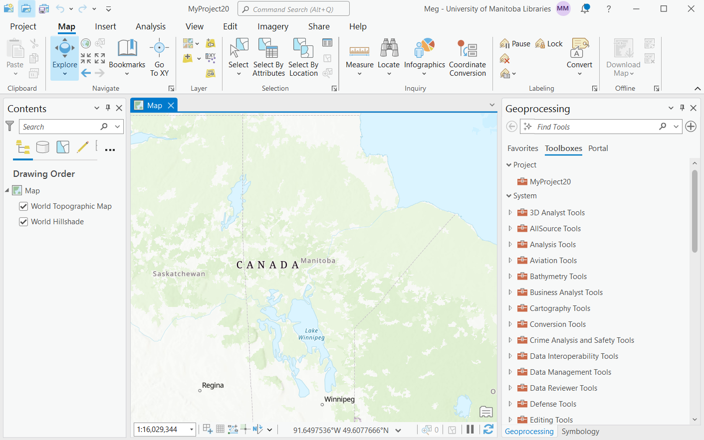

GIS Hub at Campus Libraries:
Accessing your ESRI License and other mapping tools
Meg Miller - GIS & Data Visualization Librarian
slides: bit.ly/uml_gis
Outline
- Library support for GIS
- Notes from Meg
- Questions
How can Libraries support me
Library Support:
Librarian Support
Technology
Subject Guides
Professional development opportunities
Technology
UML GIS Hub
- Semi-automated management and integration of UM ESRI site license;
- Discovery and access point for proprietary and open researcher data;
- Secure local environment for active-use geospatial datasets.
ArcGIS Pro

Tool Choice

Subject Guides
Professional Development
PD Opportunities
- Workshops (see library calendar)
- Manitoba GIS User Group (MGUG) + Conference
- GIS Days (November)
- Esri scholarship competition
Notes from Meg
Key Points:
- Your expertise - be kind to your future self
- Purpose - exploratory vs. explanatory
- Audience - expertise, mediation
- Data requirements - size, residency, privacy...
Questions
meg.miller@umanitoba.ca
slides: bit.ly/uml_gis